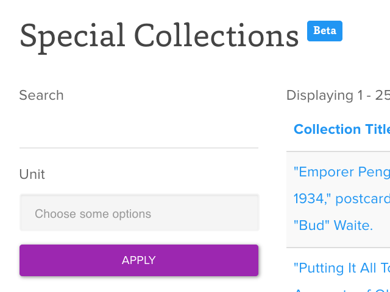
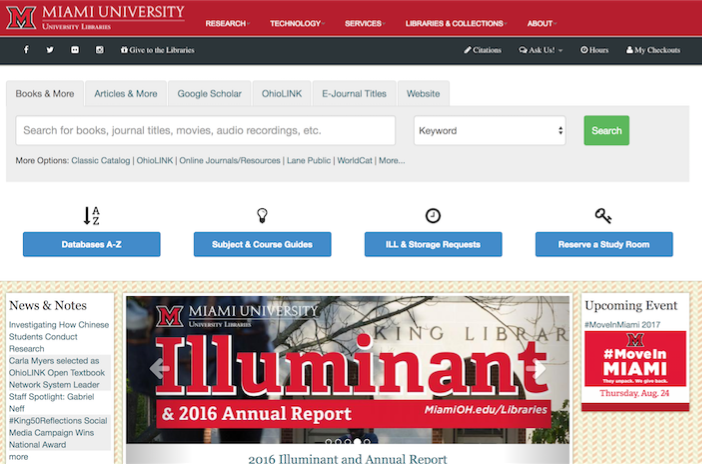
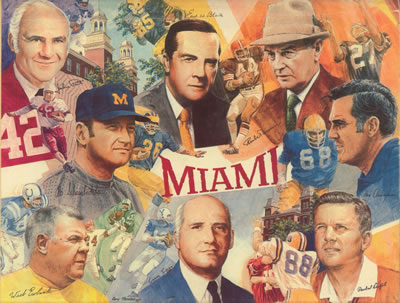

Drupal
Ohio State University Libraries
Responsive Drupal 8 site.
Project still in progress. A much more complex site than Miami University. Consumes local APIs to display library data and also posts data via JSON endpoints. Implements Paragraphs module and Pattern Lab to create discrete design elements giving content creators flexibility to create intriguing content while also adhering to style guidelines.
Several custom modules built: a module to automatically create ICS files for Events and Exhibits; a calendar module which builds a calendar from Drupal Event data and rendered via FullCalendar.io; a staff module which consumes staff directory data from canonical data source and automatically assigns roles; an alert module which listens for institution-wide alerts and displays data on site and others.
Core Technologies
- Drupal 8
- Modules Utilized: Paragraphs, Migrate API, Video Embed Field, DropzoneJS, Metatag, Chosen
- jQuery/JavaScript
- Rest APIs
- Libraries: FullCalendar, Moment, Twix, Animate.css
- Compass/Sass
JS File Consuming Local API
Makes a call to local API and displays data if present.
(function ($, Drupal) {Drupal.behaviors.collectionsBehavior = {attach: function (context, settings) {
/**
* Variables for In Use AJAX calls.
*
*/
var id;
var collection_id;
var sierra_id;
var collection_url_base = 'https://example.com/';
var icon = "";
var dc_url_base = 'https://example.com';
var dc_url_query;
if ($(context).find('.collection-id').data('collection-id')) {
collection_id = $(context).find('.collection-id').data('collection-id');
dc_url_query = encodeURIComponent(collection_id.toLowerCase());
}
if ($(context).find('.collection-id').data('sierra-id')) {
sierra_id = $(context).find('.collection-id').data('sierra-id');
}
var dcPromise = $.get(dc_url_base + dc_url_query);
dcPromise.done(function(data) {
if (data.indexOf('No entries found') == -1) {
$(context).find('.collection-links').append("Digital Collections " + icon + "
");
}
});
var collectionIdPromise = $.getJSON(collection_url_base + collection_id);
collectionIdPromise.done(function(data) {
if (data.url) {
if (data.url.at) {
$(context).find('p.finding-aid-placeholder').remove();
$(context).find('.collection-links').prepend("");
}
}
if (data.physical_description) {
if (data.historical) {
$(context).find('.summary-information').append("Date: " + data.historical + "
");
}
if (data.physical_description.extent) {
$(context).find('.summary-information').append("Extent: " + data.physical_description.extent + "
");
}
if (data.physical_description.description) {
$(context).find('.summary-information').append("Physical Description: " + data.physical_description.description + "
");
}
}
if (data.access_restrict) {
$(context).find('.access-information').append("Access to Materials: " + data.access_restrict + "
");
}
if (data.summary) {
$(context).find('.access-information').append("Summary: " + data.summary + "
");
}
if (data.scope_content) {
$(context).find('.access-information').prepend("Scope & Contents: " + data.scope_content + "
");
}
if (data.related_material.length > 0) {
$(context).find('.summary-information').append("Related Material:
");
$(context).find('.summary-information').append("");
var count = data.related_material.length;
for (var i = 0; i < count; i++) {
var related_material_count = data.related_material[i].length;
for (var j = 0; j < related_material_count; j++) {
var last = related_material_count - 1;
if (j == last) {
$(context).find('.related-material > li').append(data.related_material[i][j]);
} else {
$(context).find('.related-material > li').append(data.related_material[i][j] + " - ");
}
}
}
$(context).find('.summary-information').append("");
}
});
collectionIdPromise.fail(function(jqXHR, textStatus) {
var sierraIdPromise = $.getJSON(collection_url_base + sierra_id);
sierraIdPromise.done(function(data) {
if (data.url !== undefined) {
if (data.url.sierra) {
var match;
for (i = 0; i < data.url.sierra.length; i++) {
if ((data.url.sierra[i].trim().indexOf('rave') !== -1) || (data.url.sierra[i].trim().indexOf('finding-aids') !== -1)) {
match = data.url.sierra[i];
}
}
if (match !== undefined) {
var url = "Finding Aid " + icon + "";
$(context).find('p.finding-aid-placeholder').remove();
$(context).find('.collection-links').prepend("" + url + "
");
} else {
$(context).find('p.finding-aid-placeholder').remove();
}
} else {
$(context).find('p.finding-aid-placeholder').remove();
}
}
if (data.summary) {
$(context).find('.access-information').append("Summary: " + data.summary + "
");
}
});
sierraIdPromise.fail(function() {
$(context).find('p.finding-aid-placeholder').remove();
});
if (jqXHR.status === 0 || jqXHR.status === 500) {
$(context).find('.access-information').prepend("We're sorry, but we have experienced an error connecting to the data source for this record. Please let us know the URL and any details that might be helpful.
");
}
});
}
};
})(jQuery, Drupal);
Paragraphs Functionality: PHP, Twig
Example Page Built with Paragraph Elements
Mobile View
Editor Interface for Paragraphs
Form values eventually get passed to Twig template.
scarlet.theme
PHP File Building Variables for Twig Template.
function scarlet_preprocess_paragraph__embedded_image_with_caption(&$variables) {
$paragraph = $variables['paragraph'];
$original_image = $paragraph->get('field_embedded_image')->entity->uri->value;
$variables['img_alignment'] = $paragraph->get('field_image_alignment')->value;
$variables['img_url'] = file_create_url($paragraph->get('field_embedded_image')->entity->uri->value);
$variables['large_img_url'] = ImageStyle::load('large')->buildUrl($original_image);
$variables['medium_img_url'] = ImageStyle::load('medium')->buildUrl($original_image);
$variables['small_img_url'] = ImageStyle::load('small')->buildUrl($original_image);
$variables['img_alt'] = $paragraph->get('field_embedded_image')->__get('alt');
$variables['caption'] = $paragraph->get('field_embedded_image_caption')->value;
$variables['img_size'] = $paragraph->get('field_image_size')->value;
}
paragraph--embedded-image-with-caption.html.twig
Twig Markup for Embedded Images
{% if img_size == 'large' %}
{% set modified_img_url = large_img_url %}
{% elseif img_size == 'medium' %}
{% set modified_img_url = medium_img_url %}
{% elseif img_size == 'small' %}
{% set modified_img_url = small_img_url %}
{% else %}
{% set modified_img_url = img_url %}
{% endif %}
{% block paragraph %}
<div{{ attributes.addClass(classes) }}>
{% block content %}
<figure class="embedded_image-{{ img_alignment }}">
<a href="{{ img_url }}" data-lightbox="image-1" data-title="{{ caption }}"><img class="img-rounded img-responsive" src="{{ modified_img_url }}" alt="{{ img_alt }}" /></a>
{% if caption %}
<figcaption>{{ caption }}</figcaption>
{% endif %}
</figure>
{% endblock %}
</div>
{% endblock paragraph %}
Calendar Functionality: PHP, JavaScript
Calendar View of Event & Exhibit Content Types
Mobile View
CalendarGenerator.php
PHP Class generating Events & Exhibits JSON output for use with FullCalendar.js
<?php
namespace Drupal\calendar\Service;
use Drupal\node\Entity;
use Drupal\Core\Entity\EntityTypeManager;
use Drupal\Core\Url;
use Drupal\Core;
class CalendarGenerator
{
public function getCalendar() {
$events = $this->getData();
return $events;
}
public function getData() {
$query = \Drupal::entityQuery('node');
$group = $query->orConditionGroup()
->condition('type', 'event')
->condition('type', 'exhibit');
$events_query = $query->condition($group)
->condition('status', 1)
->execute();
$events_nodes = \Drupal::entityTypeManager()->getStorage('node')->loadMultiple($events_query);
$events = array();
$pregCheck = array('/[[:punct:]]/','/[[:blank:]]/');
foreach ($events_nodes as $node) {
$options = ['absolute' => TRUE];
$nid = $node->nid->value;
$url = \Drupal\Core\Url::fromRoute('entity.node.canonical', ['node' => $nid], $options);
$url = $url->toString();
$event_title = $node->title->value;
$start_date = $node->field_start_date->value;
$end_date = $node->field_end_date->value;
$locationClass = strtolower(preg_replace($pregCheck, '-', $node->field_location->entity->title->value));
$type = strtolower($node->field_event_exhibit_type->entity->name->value);
if ($type != '') {
$classes = $type . " " . $locationClass;
} else {
$classes = $locationClass;
}
$event = array("id" => $nid, "title" => $event_title, "start" => $start_date, "end" => $end_date, "className" => $classes, "url" => $url, "location" => $locationClass, "type" => $type);
array_push($events, $event);
}
return $events;
}
}
Miami University Libraries
Responsive Drupal 7 site.
Integrates with Vimeo API for video tutorial functionality. Aside from serving as primary web presence for the University Libraries. It is also used as back-end for large screen digital displays throughout library.
Core Technologies
- Drupal 7
- Views Module
- Rest APIs
- XML Feeds
- jQuery
PHP
Instagram API Contest
A small app implementing a social media campaign/contest at Miami University Libraries. Grabbed Instagram images and metadata via API and implemented a javascript/php voting mechanism to gather votes.
Core Technologies
- PHP
- Instagram REST API
- jQuery/JavaScript
Library Data Dashboard Project
This project's goal was to create a single application through which administrators and library staff could at a glance get dynamic and live data regarding as many aspects of the library for which we could reasonably get usable data.
The data is coming from many different vendors and services and is either pulled dynamically via an API, uploaded manually to a database or read out of different types of flat files. These data points are then run through the Highcharts.js library to produce data visualizations. PHP, MySQL, jQuery are the primary tools used.
Core Technologies
- PHP
- Highcharts.js
- jQuery/JavaScript

JavaScript
"Snowfall" Cradle of Coaches Digital Exhibit
From Miami University's Special Collections: Beginning in 2014, we are working to preserve not only a record of the materials displayed in our exhibits but also the narrative and story that is built from our collections in each exhibit. With the help of the University Libraries’ Emerging Technologies Cluster, we have recreated the ‘feel’ of each exhibit in a digital storytelling platform modeled on the New York Times’ Snow Fall project. These sites present a record of each exhibit in a dynamic, media-rich format.
This example may look a little familiar. I was inspired by the New York Times' Snowfall Project but also heavily inspired by Outside's Lost on Everest. I wanted to tell the rich stories of our special collections through this medium. Outside's site also inspired me to focus on Web Development solely for my career.
Core Technologies
- HTML5
- CSS
- jQuery/JavaScript
Large Screen Digital Touch Displays
Large Touch Screens were placed throughout the Miami University Libraries. The interface is driven by PHP and JavaScript/jQuery. Pulls data in from Miami University Libraries' main Drupal site.
Core Technologies
- PHP
- Drupal 7
- jQuery/JavaScript
Library Data Dashboard Project
This project's goal was to create a single application through which administrators and library staff could at a glance get dynamic and live data regarding as many aspects of the library for which we could reasonably get usable data.
The data is coming from many different vendors and services and is either pulled dynamically via an API, uploaded manually to a database or read out of different types of flat files. These data points are then run through the Highcharts.js library to produce data visualizations. PHP, MySQL, jQuery are the primary tools used.
Core Technologies
- PHP
- Highcharts.js
- jQuery/JavaScript
Ruby on Rails
Digital Collections
Worked with team of Ruby developers. My role was to develop the front-end. Worked with ERB templates and JavaScript/jQuery.
Core Technologies
- ERB Templates
- Sass
- jQuery/JavaScript
Ace of Cups Bar
Freelance work. Front-end is responsive and utilizes the Bootstrap framework. Integrates with a jQuery library called Isotope. Worked hand-in-hand with designer to translate design into a functional product.
Core Technologies
- Ruby on Rails
- jQuery/JavaScript